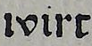

Substitutions
In general, (the creation of) ground truth means that everything on the printed page is reproduced in the same manner. Substitutions or normalisations contradict this principle. But this principle cannot always be followed in reality. Some examples are given below.
At level one, the scope for interpretation is unlimited. Thus, very wide-ranging normalisations or substitutions are possible. In contrast to levels two and three, these transfer the text more faithfully.
| Vorlage | Level 1 | Level 2 | Level 3 |
|---|---|---|---|
 |
kinder oder kinď | lꝛinď | lꝛinď |
|  | wird oder wirt | ıvirt | ıvirt |